Cinnamon Almond Butter Cereal

~ raw, vegan, gluten-free ~
If you know me or at least have read some of my breakfast cereal posts, you will see that I am a sucker for a bowl of crunchy cereal, well actually any cereal.
Especially the kind where you make a nest in the corner of the couch, bundled up in a fuzzy blanket, a bowl tucked under your chin (can’t lose a drop of almond milk) while one spoonful gets shoveled in one right after the other. Yep, this is one of those cereals.
It is crunchy and laced with a hint of banana and a good dose of cinnamonomomomomomomom. If you don’t have almond pulp on hand, you can use finely ground almonds, but the texture will be a bit denser. Nothing wrong with dense, of course, and I love experiencing different textures in the beautiful world of raw.
This batch of cereal turned into 225 little squares of goodness. As you will notice in the list of ingredients, I only used 1/4 cup of maple syrup.
Each little square only has .25 grams of sweetener in it! Not so bad if you ask me. :) But you can always add more, or better yet, just drizzle a little extra on top when you dish it up. Just make sure that the bananas are ripe; that way, they are sweeter and much easier on the good ole’ digestive system. I hope you give this recipe a try, and be sure to let me know how it goes.
Ingredients:
Yields 5 cups dry cereal (225 squares, I counted)
- 2 cups packed, moist almond pulp
- 1 1/4 cup mashed banana, (2 bananas)
- 3/4 cup raw almond butter
- 1/2 cup ground flax meal
- 1/4 cup maple syrup
- 1 Tbsp vanilla extract
- 1 Tbsp ground Ceylon cinnamon
- 1/4 tsp Himalayan pink salt
Preparation:
- In a large bowl combine the almond pulp, banana, almond butter, flax meal, maple syrup, vanilla, cinnamon, and salt.
- Remove all jewels from your hands and dive in. Mix everything really well.
- Spread the batter out onto the teflex sheet that comes with the dehydrator.
- On an Excalibur machine, I used one tray, spreading the batter from one edge to the other.
- Use a spatula to spread it nice and even, dipping it in water every once in a while, so it didn’t stick to the batter.
- Score into desired sizes. I found a ruler in
my husband’s tool box drawer that was 18″ long. Perfect for scoring!
- Dust with additional cinnamon if you wish.
- Dehydrate at 145 degrees for 1 hour, then reduce to 115 degrees (F) for 8 hours.
- Flip the tray over onto another that has the mesh sheet only.
- Peel the teflex sheet off and return to the dehydrator for another 8 hours or until dry.
- Snap apart on the score lines and place them in an airtight container. Stored on the counter, it will last 2-3 days. Fridge – 1-2 weeks. Freezer – 1-2 months.
The Institute of Culinary Ingredients™
- To learn more about maple syrup by clicking (here).
- Why do I specify Ceylon cinnamon? Click (here) to learn why.
- What is Himalayan pink salt, and does it matter? Click (here) to read more about it.
- Learn how to make raw almond butter by clicking (here).
- Learn how to grind your own flaxseeds for ultimate freshness and nutrition. Click (here).
Culinary Explanations:
- Why do I start the dehydrator at 145 degrees (F)? Click (here) to learn the reason behind this.
- When working with fresh ingredients, it is essential to taste test as you build a recipe. Learn why (here).
- Don’t own a dehydrator? Learn how to use your oven (here). I do, however honestly believe that it is a worthwhile investment. Click (here) to learn what I use.
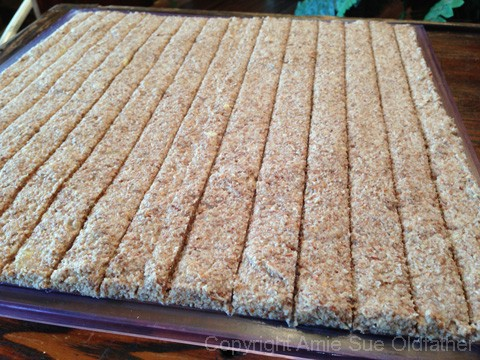
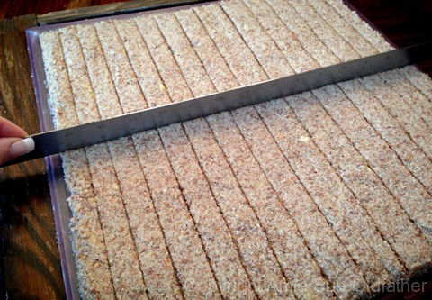
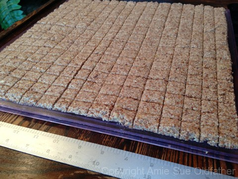
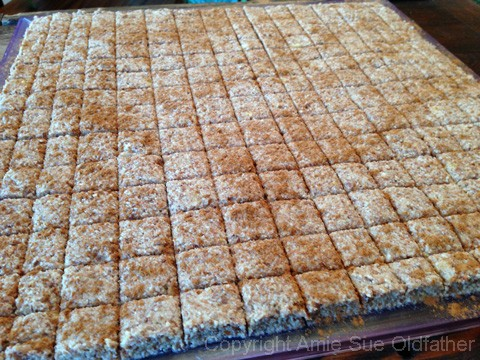
Here it is, dried and crunchified!
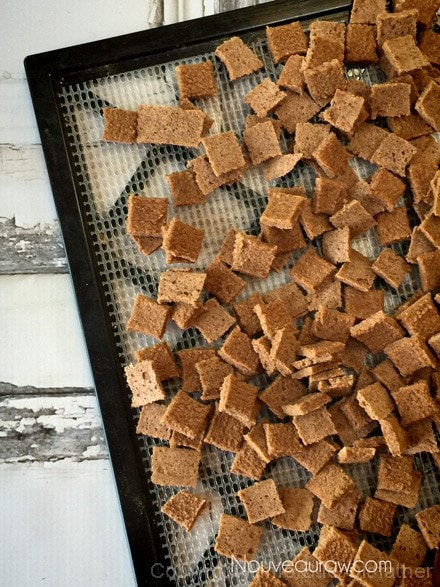
I had made this cereal several times. I always play around with
thicknesses and found that I genuinely enjoy it thick and thin. The
thicker squares have more structure.
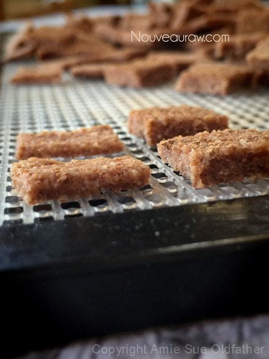
NRFDA
(Nouveau Raw Food Determining Association) conducted a test at
Nouveau Raw Kitchens, The Soggy Cereal Test.
The subject: Cinnamon Almond Butter Cereal.
Object: to see how long this raw cereal could stand up to almond milk before getting soggy.
No animals were harmed in this test.
The results posted below.
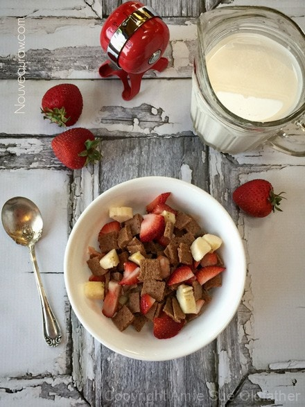
Step 1 ~ Add almond milk.
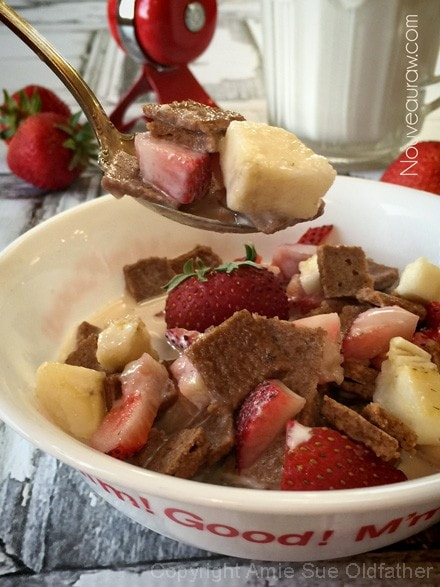
Step 2 ~ Taste test at 5 minutes…10 minutes…20 minutes…30 minutes…
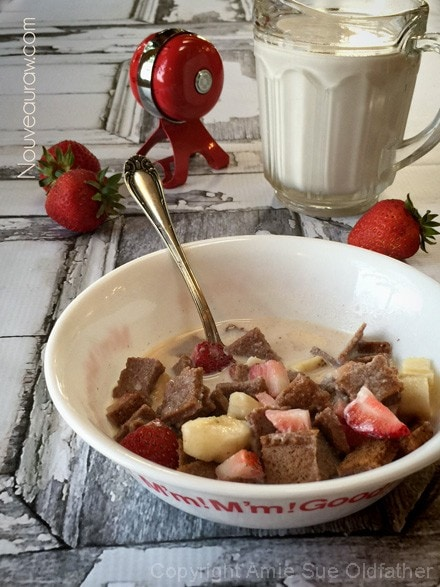
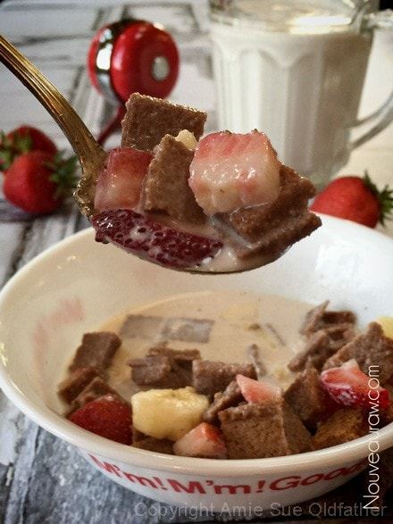
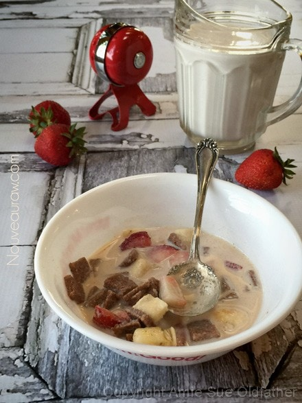
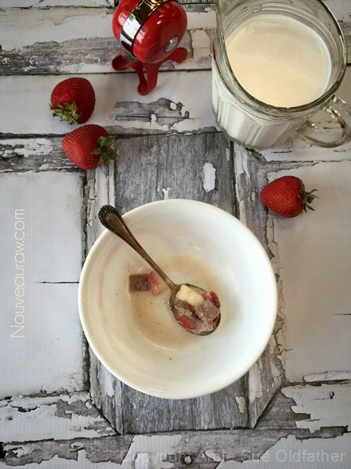
The lab tech conducting this test ate the whole bowl of the subject matter.
By the time 30 minutes hit. Still had crunch. This concludes our test — :) Pats belly.
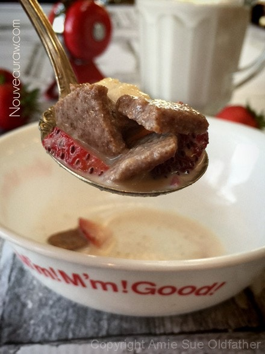
© AmieSue.com